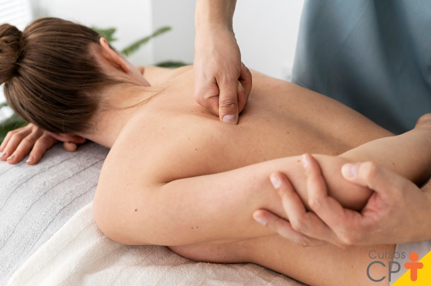
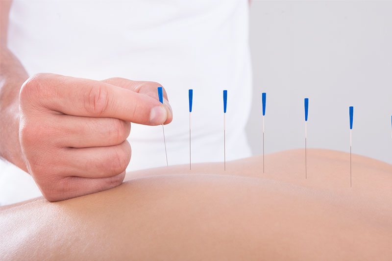
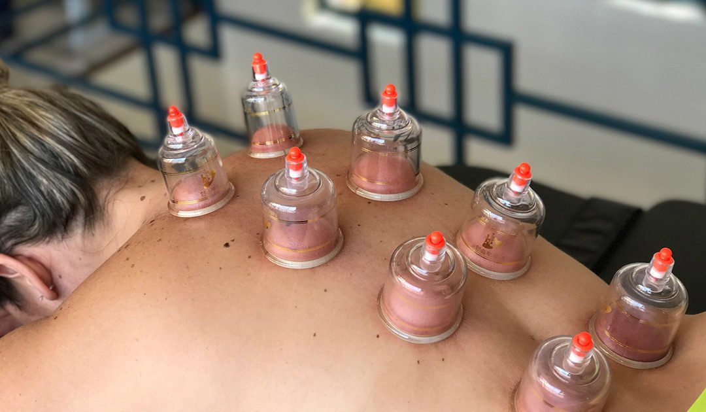
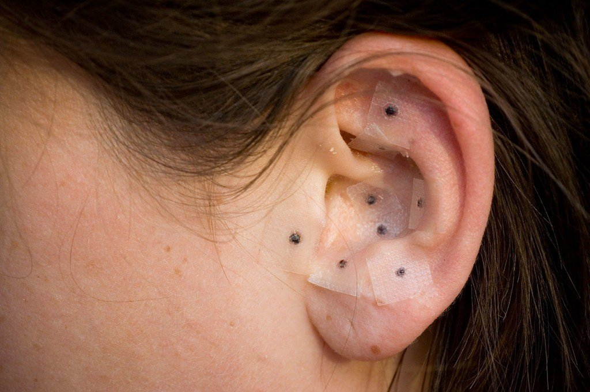
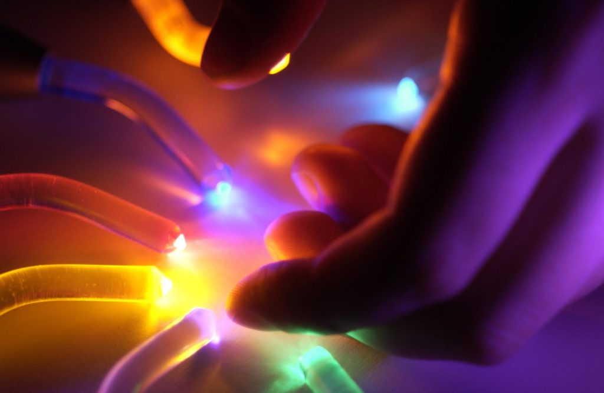
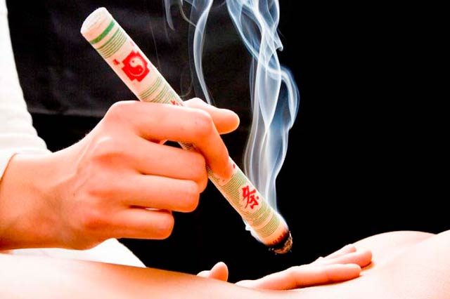
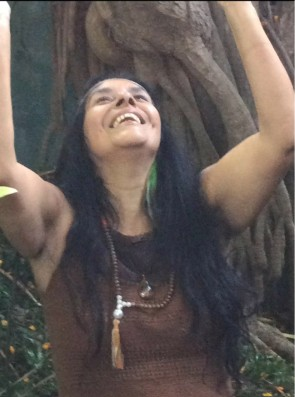
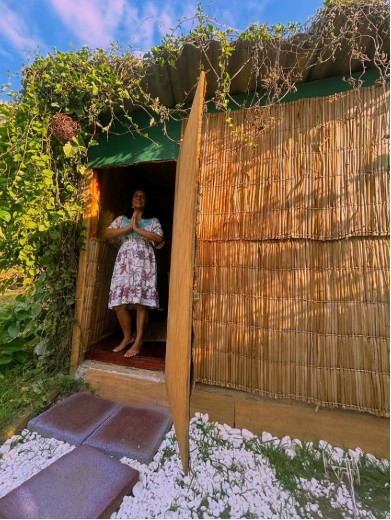

Nossas Terapias
Passe o mouse para descobrir a importância de cada técnica:

Shiatsu

Acupuntura
Reflexologia

Ventosaterapia

Auriculoterapia

Cromoterapia
Reiki

Moxabustão

Conectando sua essência com a medicina chinesa e a da floresta.
Passe o mouse para descobrir a importância de cada técnica:







Nilsa Honorato, uma eterna aprendiz das medicinas da terra e do corpo. Com dedicação ao estudo da Medicina Chinesa e das Tradições da Floresta, meu propósito é auxiliar no despertar da cura que já habita em você.
Através do Shiatsu, da Acupuntura e das vivências sagradas, busco equilibrar não apenas o físico, mas o espírito e a mente.
Minha missão é oferecer um espaço de acolhimento e transformação em um espaço natural dentro do coração de Santo André.

O Terapia do Poder foi projetado para ser um refúgio de paz. Cada detalhe foi pensado para proporcionar uma imersão sensorial completa.
Contamos com salas aromatizados, ambiente sonorizado em uma oca na floresta, garantindo que sua jornada comece assim que atravessa nossa porta.
Estamos em Santo André, prontos para te receber.
Endereço: R. Chapecó, 109 - Santo André.
WhatsApp: (11) 99101-8198
AGENDAR SESSÃO AGORA